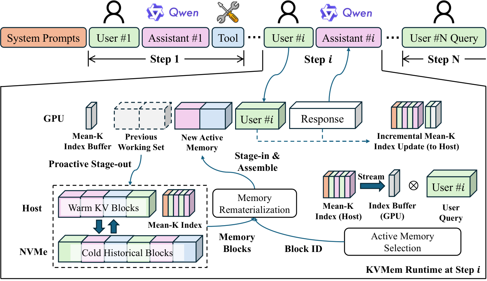

KVMem: Virtualizing Million-Token Agent Workspaces on a Consumer GPU
TL;DR
- KVMem (arXiv 2609.04852; Chai, Wang, Su, Xia, Yu) treats agent context overflow as a virtual-memory problem, not a summarization problem: overflowed history is preserved as paged KV blocks across GPU → host RAM → NVMe, and each agent step materializes a bounded, query-dependent "execution view" inside the model's native window.
- Retrieval is model-native and attention-space: each 32-token block is summarized by one de-RoPE'd Mean-K vector per layer/KV-head, scored against the current query with a scaled-dot-product softmax — no separate embedder, no re-prefilling recalled text.
- It beats compaction (the de facto standard) on utility — DeepSWE task success 43.8% → 48.4% with Qwen3.8-27B, 85.6% on LongMemEval-S (within 1.0pt of full context) — and runs 1M-token workspaces (4× the native 256K window) at ~50 tok/s on a 24GB RTX 5090 laptop.
Why this matters
Every long-running agent currently pays one of two taxes when its workspace outgrows the context window. Compaction loses fine-grained execution evidence — exactly the stack traces, diffs, and tool outputs a later step needs. Text retrieval (Compact+RAG) keeps the evidence but pays to re-prefill tokens the model already processed, sometimes many times over. KVMem's observation is that the expensive artifact — the KV state — already exists at the moment of overflow; the only reason we throw it away is that serving stacks treat context as a linear, ephemeral buffer. Decouple addressable workspace from native context window, and the model can keep verbatim access to a million tokens of its own past while every invocation stays bounded.
This lands directly on this tracker's compaction-economics thread: we've tracked the argument that shrinking context can raise cost by destroying prefix-cache reuse, and several partial answers (amortized KV compaction, nugget-level KV reuse for RAG). KVMem is the most complete systems treatment so far — and the consumer-hardware result matters separately, because local agents are precisely where naive compaction is most tempting.

Overview figure from the paper: at each step, completed blocks are proactively staged out to host/NVMe tiers; the current query is scored against a Mean-K index streamed to GPU; selected block IDs are rematerialized (with position-consistent re-RoPE) into a new active working set before decoding.The core idea
The workspace history is partitioned into logical blocks of \(B_{\mathrm{blk}}\) tokens (default 32), each preserving the KV state computed when the model originally processed those tokens. Three questions then define the system — when to reselect, what to recall, how to restore:
When — step-level scheduling. Measuring adjacent-window attention KL over OpenHands SWE-bench rollouts, the authors find attention over history is stable within an agent step and shifts sharply at step boundaries. So KVMem updates the historical working set exactly once per step — after prefill of the new user/tool input, before decoding — and freezes it during decoding.
What — Mean-K attention-space retrieval. Historical attention is extremely sparse: across analyzed windows averaging 103.1 candidate blocks, the top-8 blocks capture 66.5% of historical attention mass (top-16: 77.0%). So relevance scoring doesn't need token granularity. Each block \(b\) is summarized, per layer \(l\) and KV head \(g\), by the mean of its position-independent (RoPE-removed) key vectors:
where \(\tilde{k}_{l,i,g}\) is token \(i\)'s key with its positional rotation stripped, so content is comparable after blocks are remapped to new positions. At a recall point, the (equally de-RoPE'd) query tokens \(q_{l,m,h}\) score every candidate block via a softmax over the candidate set \(\mathcal{C}\), summed over query tokens \(m\) and averaged over layer–head pairs:
with \(g(h)\) the KV head serving query head \(h\) under GQA and \(d\) the head dimension. Sink and recent blocks are always retained; the rest of the budget goes to the highest-\(R_b\) blocks, restored in chronological order.
How — tiered rematerialization. Selected blocks may live on GPU (page reuse from the previous step), host memory (warm), or NVMe (cold). Because keys were position-encoded at their original positions, restored blocks get a position-consistent re-RoPE to their new logical positions in the assembled view; fragmented block loads are packed into bulk transfers and pipelined behind adjacent stages.
How it works
Algorithm: KVMem step-level lifecycle (agent step i)
Input: new step input u_i (user/tool msg), block size B=32, view budget W
1. Prefill u_i; during prefill, collect de-RoPE'd query vectors
and incrementally build Mean-K entries for newly completed blocks
2. Stage-out: move completed blocks from GPU to host (warm) tier;
demote cold blocks host -> NVMe; update Mean-K index (host)
3. Score: stream Mean-K index through a GPU buffer; compute R_b for
all candidate blocks (softmax in attention space, mean over l,h)
4. Select: reserve sink + recent blocks; fill remaining W with top-R_b
blocks; restore chronological order
5. Rematerialize: reuse overlapping GPU pages; batch host/NVMe misses
into packed, pipelined transfers; re-RoPE keys to new positions
6. Assemble execution view = [selected history | current context];
replay current query over the view
7. Decode with the working set FIXED; new KV grows at the tail
8. Repeat at next step boundary
Everything is implemented in QW3, the authors' native C++/CUDA inference engine; the addressable repository scales to 10M tokens with NVMe backing. The index is tiny relative to KV state (one vector per block/layer/KV-head), which is what makes million-token scoring affordable per step.
Results
All baselines share the same active-view budget (32K–100K depending on workspace scale) and the same engine, differing only in context-management policy:
- LongMemEval-S (~115K-token multi-session QA, Qwen3.6-27B): KVMem 85.6% vs Full Context 86.6%, Compact+RAG 86.2%, Compact-only 45.6%, Sliding Window 26.8%. Near-full-context utility from a bounded view.
- AgentLongBench ≤256K: KVMem 60.87% — above Full Context (59.54%) and far above Compact+RAG (47.49%); exposing only query-relevant history appears to mitigate long-context degradation.
- Beyond the native window: MemoryAgentBench >256K: 40.99% vs 34.80% (Compact+RAG) / 27.54% (Compact-only). AgentLongBench: 53.0% at 512K and 50.0% at 1M — +8pts over Compact+RAG and +16pts over Compact-only at 1M.
- Live agent trajectories: on the DeepSWE long-context test with Qwen3.8-27B (no mechanism changes for the newer model), task success improves 43.8% → 48.4% over compaction-only management.
- Local deployment: Qwen3.6/3.8-27B NVFP4 with MTP on a 24GB RTX 5090 laptop, 1M-token virtual workspace, ~50 tokens/s single-session — interactive local agents with 4× native-window workspaces.
- Efficiency-wise, recovery avoids Compact+RAG's re-prefill entirely (restoring KV instead of text), which the paper reports as a substantial gap in pre-answer latency and fresh-prefill volume.
How it connects
- This is the systems-level answer to the compaction-vs-prefix-cache-economics argument tracked here in August: don't choose between losing evidence and re-paying prefill — page the KV.
- The Mean-K index is the workspace-scale cousin of KV-cache retention methods (H2O's token scoring, StreamingLLM's sinks) and of CoinRAG's nugget-level KV reuse (tracked under memory-context): same "attention knows what it needs" instinct, lifted from pruning an active context to indexing a persistent store.
- It composes naturally with Trace as State: TaS re-presents context with discovered task state up front, KVMem makes re-presentation cheap by never discarding the KV; and it contrasts with PRO-LONG-style programmatic memory, which externalizes state as text/code precisely because it assumes KV is ephemeral.
- The cross-model KV transfer entry (NVIDIA, 2608.03893) is the missing piece if you ever want a routed fleet to share one paged workspace — today KVMem's repository is bound to one serving model's weights.
Critical take
The utility comparisons are honest but the baseline set flatters slightly: Compact+RAG is instantiated as a text retriever over compacted summaries, and the strongest text-side configurations (aggressive hybrid retrieval, reranking) aren't explored — on LongMemEval-S, plain Compact+RAG already matches KVMem, so the win there is efficiency, not accuracy. The approach also inherits hard constraints text does not: the paged KV is (a) bound to one model's weights and architecture — any model upgrade invalidates a 10M-token repository that text stores would survive — and (b) storage-hungry, since KV state is much larger than its source text (the paper's own motivation for packed transfers); the NVMe footprint of a 10M-token workspace goes unstated. Mean-K's single-vector-per-block approximation works because blocks are 32 tokens; the paper concedes heterogeneous content within larger blocks degrades it, which caps how far the index can be shrunk. And step-boundary scheduling assumes agent-shaped traffic — a chat workload with mid-turn topic shifts violates the "attention is stable within a step" premise. Within its stated scope (single serving model, agentic steps, consumer GPU), though, the design is clean and the DeepSWE end-to-end gain is the number that matters: +4.6pts on real long-horizon SWE trajectories purely from better context plumbing.
If you remember three things
- Page the KV, don't summarize it: overflow history survives as addressable KV blocks across GPU/host/NVMe, and each step assembles a bounded query-dependent view — verbatim evidence without re-prefill.
- The serving model is its own retriever: one de-RoPE'd Mean-K vector per 32-token block, scored by softmaxed scaled dot products in the model's own attention space — justified by attention sparsity (top-8 of ~103 blocks ≈ 66.5% of mass).
- The headline numbers: 43.8% → 48.4% DeepSWE with Qwen3.8-27B; 1M-token workspace (4× native) at ~50 tok/s on a 24GB laptop GPU; +8 to +16pts over compaction-family baselines at 1M tokens.